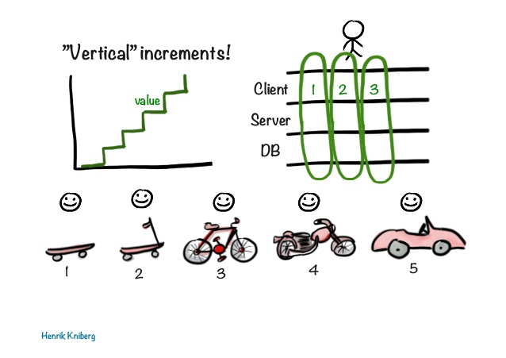
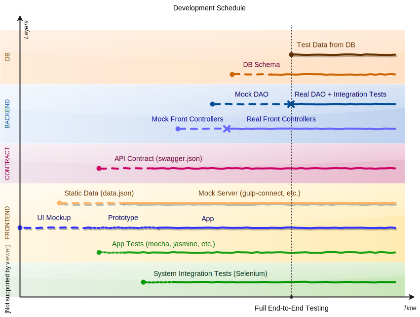

Application Development Top-Down
Delivering a product prototype to the client early is often very important to project success. A client may have only general idea of a product he wants to get at the end and prototyping may save a lot of time and efforts of the team by reducing amount of unnecessary work.
Accordingly, building web applications ground-up, starting from data model, may be a bad idea.
The development usually starts from data modeling, persistence and service layers and, finally, the UI.
The problem with ground-up approach is that client can’t see and play with the product on early development stages. When a client gets first working prototype a lot of work has already done both on front-end and back-end side. And if the prototype does not meet the client’s expectations, this work may be thrown away.
When a significant changes are done to data model or when data model does not match well to domain model – these are the signs that it was a gap in the analysis and prototyping phases of the project.
Hopefully, agile methodologies can mitigate the problem: 
It’s iterative development process with short iterations when each iteration adds some value. Client-side, server-side and DB are changed together in order to add new functionality. And the Client is always happy, even having a part of MVP.
The question is: «Should Client be happy with a skateboard?» In a real world Client may need to try a «bicycle» before he can say that it looks similar to product he would like to get at the end.
In such conditions of uncertainty the top-down approach, Development from Web Prototype, may be better solution. I think it’s even more «agile» way since client’s feedback is collected earlier, reducing unnecessary work of the team.
Development Plan
On following diagram you can see common development phases of the project on a timeline (Vision and Analysis phases were left behind the scene).

Let’s assume, we’re going to develop a web application consuming REST API from back-end server.
1. UI Prototype
The actual development starts with web application prototyping. First UI mockups are created and presented to Client. This is typically an single page application (SPA) written using some component framework: Angular, React, whatever developers are confident with. If there is some visual prototype or screen mockups then initial version can be created quickly.
2. Add Some Static Data
When initial application structure is clear, it’s the time to add some data. This should not be a real data as there is no real backend to provide it. It’s enough to create some json files and deploy them under /assets or /data folder along with application.
3. Start Defining API Contract
This static data is a foundation of future API specification (contract). The most popular format for writing API specifications is OpenAPI/Swagger. It suites well for most common cases. Some aspects, like inheritance, are not clear enough in specification but the format is widely accepted in the industry so it’s a default choice.
Alternative formats for describing API are:
When you have Specification, you can automatically generate and publish API reference documentation. This will used often by your team internally and you will publish it later if you decide to make your API public.
There are tools on the market you can use to generate HTML documentation from API Specification.
4. A Time for Testing
Now you have web application fed with static data. It’s time to write some tests. You may start testing some base functionality you’re confident with. Web Developers may start testing web components using JS-stuff like mocha, jasmine or similar framework.
It is impossible to cover all the cases without real application server. Also, it is very difficult to test requests sent by UI application. But you can test simple scenarios like: «WHEN user requests some url THEN expected data is shown on page».
5. …Even for System Integration Testing
Webapp functional end-to-end testing with test data can be done by web developers.
System integration testing is usually done by QA team and employs both web and back-end developers. It usually covers complex interaction scenarios between front-end and back-end.
Common tool used for system integration testing is Selenium. Sometimes it is also necessary to develop some extra tools for direct access to underlaying data and external system emulators (test doubles). And often the team will end up designing a custom test DSL to simplify writing this kind of tests
There is a long way to go but even now it’s possible to star writing some simple tests
And it is now possible to start creating System Integration tests. Even you have no back-end yet, you defined an expected data in static files so there is nothing preventing from using a heavy stuff like Selenium.
6. Starting Back-End: Mock Controllers
We have a contract (API specification) and test data in static files (data should match the contract). We have also some system integration tests.
Let’s concentrate on deployment and testing. We don’t need to implement services and data layer so far.
Now we need a back-end and full deployment cycle to test both front-end and back-end together. From a API specification we may generate data transfer objects and interfaces of front controllers. Then we should implement controllers so they return the same test data. Mock controllers are enough. They may serve the same static data as for webapp.
The most important that after completing this step our system integration tests should run against real UI working win real server. And tests should be green.
7. Continuing Back-End: Controllers and Mock DAO
Now it’s time to implement services, one by one. Database is still not necessary - we may mock persistence (DAO) layer. The tests still should be green and we may add more tests now since we have Services now.
8. Continuing Back-End: Real Database and DAO
Now we should design our persistence layer, create DAO add test data so the tests are still green. After that we’ll have all components in our system:
- Web Application
- REST API Specification
- Backend: Controllers, Services, DAO
- Database
Now let’s continue with short interactions affecting all system layers.
Final Notes
This not a methodology. It’s just the idea of how to minimize unnecessary work in conditions of business uncertainty.
You should not use this instruction blindly. Some steps may be omitted or combined for your project.